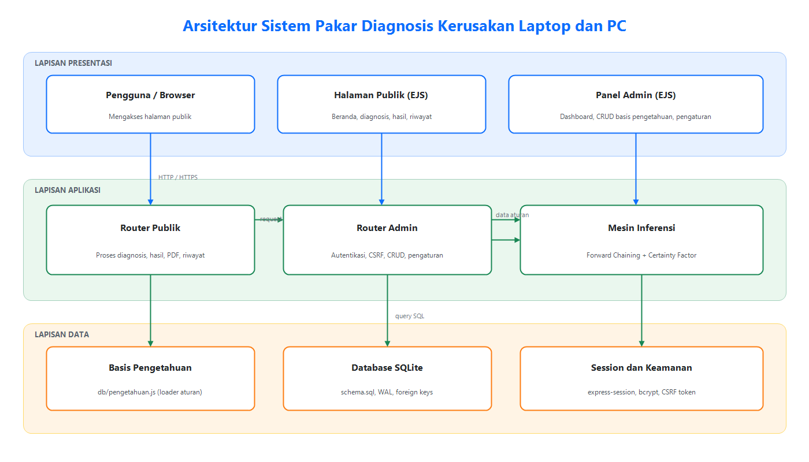
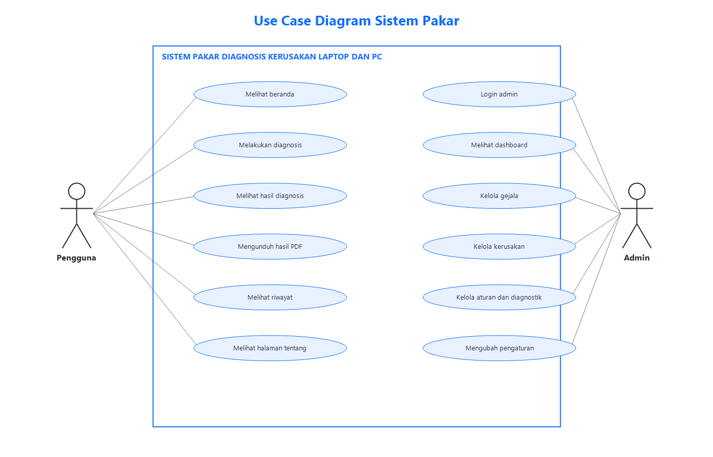
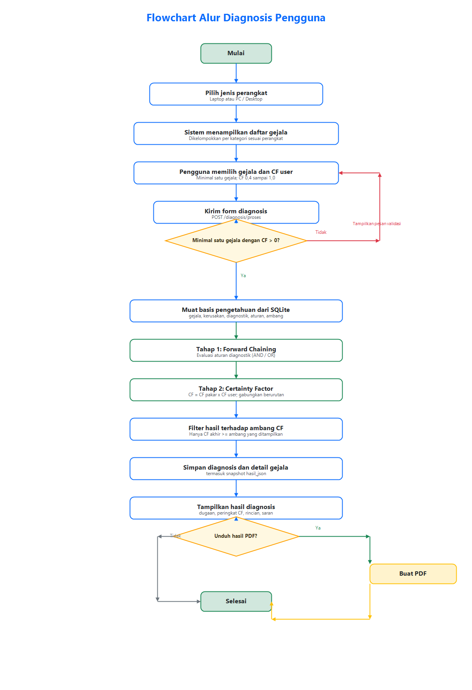
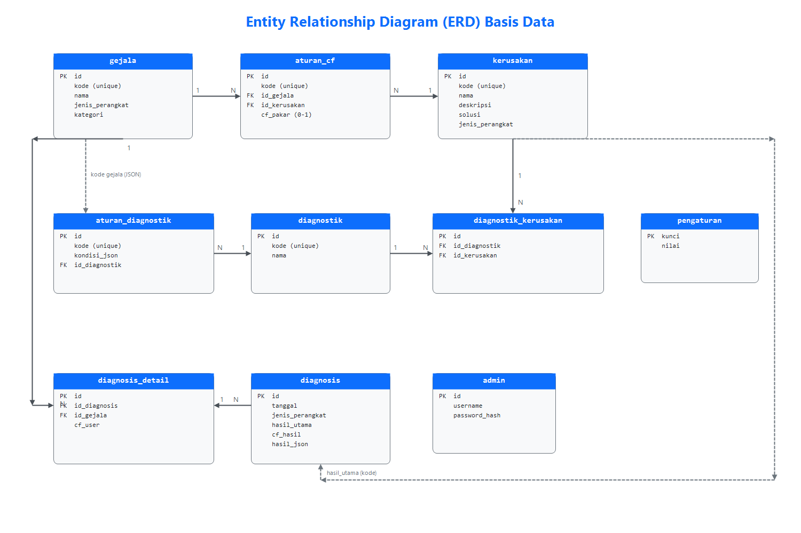
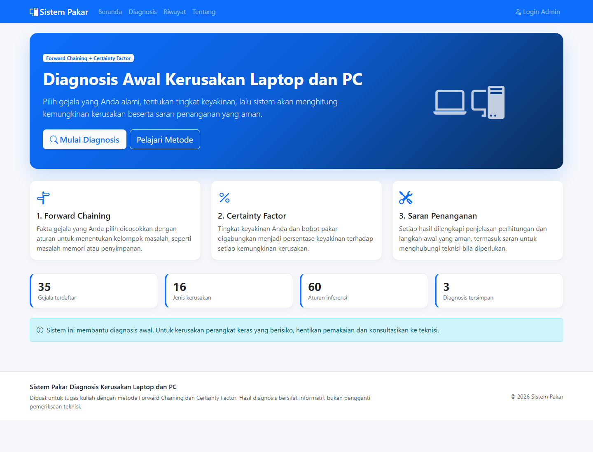
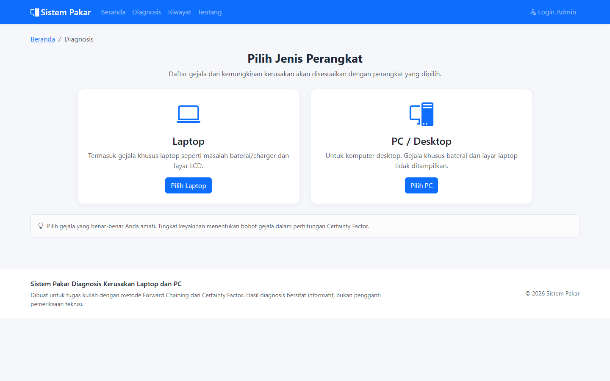
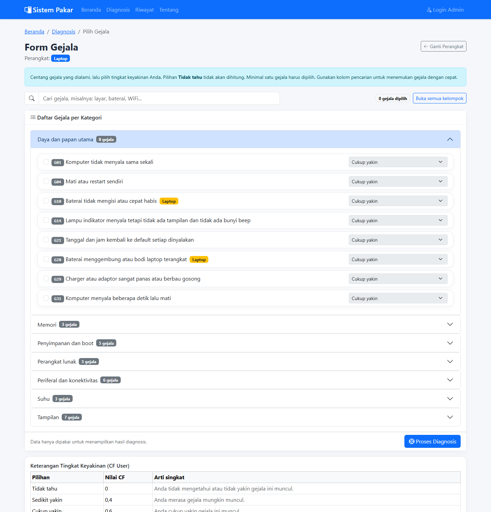
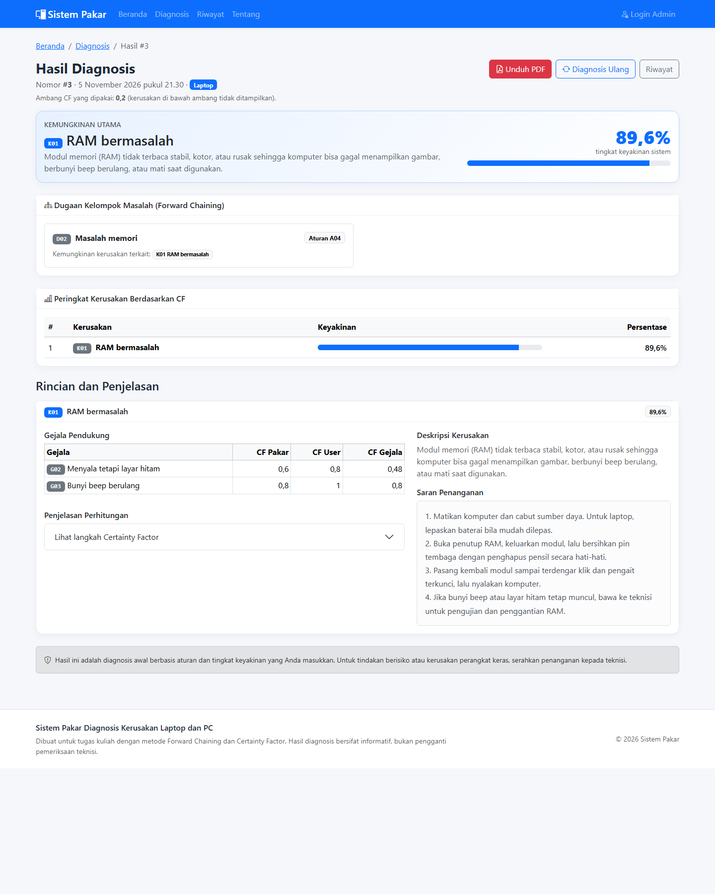
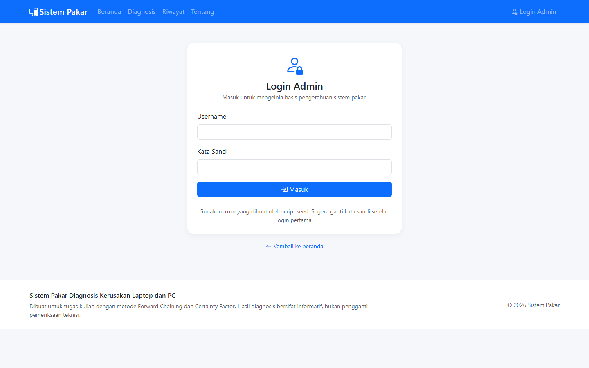

LAPORAN UJIAN TENGAH SEMESTER (UTS)
MATA KULIAH SISTEM PAKAR
SISTEM PAKAR DIAGNOSIS KERUSAKAN LAPTOP DAN PC MENGGUNAKAN METODE FORWARD CHAINING DAN CERTAINTY FACTOR BERBASIS WEB
Disusun oleh:
| Nama | : | ................................ |
| NIM | : | ................................ |
| Kelas / Semester | : | ................................ |
| Program Studi | : | Teknik Informatika |
| Fakultas | : | ................................ |
| Dosen Pengampu | : | ................................ |
PROGRAM STUDI TEKNIK INFORMATIKA
FAKULTAS ................................
UNIVERSITAS ................................
2026
LEMBAR PENGESAHAN
Laporan Ujian Tengah Semester (UTS) dengan judul:
“Sistem Pakar Diagnosis Kerusakan Laptop dan PC Menggunakan Metode Forward Chaining dan Certainty Factor Berbasis Webâ€
telah disusun dan disetujui sebagai bagian dari penilaian Ujian Tengah Semester mata kuliah Sistem Pakar.
| Mengetahui, Ketua Program Studi (................................) |
............., ............... 2026 Dosen Pengampu (................................) |
ABSTRAK
Kerusakan perangkat laptop dan PC merupakan masalah yang sering terjadi dan dapat menyebabkan terganggunya aktivitas pengguna. Banyak pengguna tidak memiliki pengetahuan awal yang cukup untuk mengenali penyebab kerusakan, sehingga cenderung langsung membawa perangkat ke teknisi. Penelitian ini membangun sebuah sistem pakar berbasis web yang mampu melakukan diagnosis awal kerusakan laptop dan PC berdasarkan gejala yang dialami pengguna. Sistem menggunakan metode Forward Chaining untuk mencocokkan fakta gejala dengan aturan diagnostik, serta metode Certainty Factor (CF) untuk menghitung tingkat keyakinan setiap kemungkinan kerusakan. Basis pengetahuan yang digunakan terdiri atas 35 gejala, 16 jenis kerusakan, 7 kelompok diagnostik, 16 aturan diagnostik, dan 44 aturan CF. Aplikasi dibangun dengan Node.js, Express, EJS, dan SQLite, serta dilengkapi panel admin untuk mengelola basis pengetahuan, mengatur ambang CF, dan melihat riwayat diagnosis. Hasil pengujian menunjukkan bahwa seluruh 12 pengujian otomatis berhasil dilewati, meliputi 9 skenario inferensi, pengujian integritas basis pengetahuan, dan 2 pengujian migrasi data. Sistem juga mampu menampilkan penjelasan langkah perhitungan CF dan mengunduh hasil diagnosis dalam bentuk PDF. Penelitian ini diharapkan dapat membantu pengguna melakukan diagnosis awal secara cepat, transparan, dan mudah diakses.
Kata kunci: sistem pakar, forward chaining, certainty factor, diagnosis kerusakan, laptop, PC, berbasis web
KATA PENGANTAR
Puji syukur penulis panjatkan kepada Tuhan Yang Maha Esa karena atas rahmat dan karunia-Nya penulis dapat menyelesaikan laporan Ujian Tengah Semester (UTS) mata kuliah Sistem Pakar dengan judul “Sistem Pakar Diagnosis Kerusakan Laptop dan PC Menggunakan Metode Forward Chaining dan Certainty Factor Berbasis Webâ€.
Laporan ini disusun sebagai bentuk dokumentasi perancangan, implementasi, dan pengujian aplikasi sistem pakar yang telah dibuat. Di dalamnya dijelaskan latar belakang masalah, landasan teori, analisis kebutuhan, perancangan sistem, implementasi, hasil pengujian, serta kesimpulan dan saran.
Penulis mengucapkan terima kasih kepada dosen pengampu mata kuliah Sistem Pakar atas bimbingan dan arahan yang diberikan. Penulis juga mengucapkan terima kasih kepada pihak-pihak yang telah membantu proses penyusunan laporan dan pengembangan aplikasi ini. Penulis menyadari bahwa laporan ini masih memiliki kekurangan. Oleh karena itu, kritik dan saran yang membangun sangat diharapkan untuk perbaikan pada masa mendatang.
| ............., ............... 2026 |
| Penulis |
(................................) |
DAFTAR ISI
[DAFTAR ISI OTOMATIS]
DAFTAR GAMBAR
| Nomor | Judul Gambar | Halaman |
|---|---|---|
| Gambar 3.1 | Arsitektur sistem pakar diagnosis kerusakan laptop dan PC | ... |
| Gambar 3.2 | Use case diagram sistem pakar | ... |
| Gambar 3.3 | Flowchart alur diagnosis pengguna | ... |
| Gambar 3.4 | Entity Relationship Diagram (ERD) basis data | ... |
| Gambar 4.1 | Tampilan halaman beranda | ... |
| Gambar 4.2 | Tampilan halaman pemilihan jenis perangkat | ... |
| Gambar 4.3 | Tampilan form pemilihan gejala | ... |
| Gambar 4.4 | Tampilan halaman hasil diagnosis | ... |
| Gambar 4.5 | Tampilan halaman login admin | ... |
DAFTAR TABEL
| Nomor | Judul Tabel | Halaman |
|---|---|---|
| Tabel 2.1 | Perbandingan Forward Chaining dan Backward Chaining | ... |
| Tabel 2.2 | Interpretasi nilai Certainty Factor | ... |
| Tabel 3.1 | Kebutuhan fungsional sistem | ... |
| Tabel 3.2 | Kebutuhan non-fungsional sistem | ... |
| Tabel 3.3 | Ringkasan basis pengetahuan versi 2 | ... |
| Tabel 3.4 | Contoh aturan diagnostik (tahap 1) | ... |
| Tabel 3.5 | Contoh aturan Certainty Factor (tahap 2) | ... |
| Tabel 3.6 | Struktur tabel basis data | ... |
| Tabel 4.1 | Lingkungan implementasi perangkat lunak dan perangkat keras | ... |
| Tabel 4.2 | Hasil pengujian unit mesin inferensi | ... |
| Tabel 4.3 | Hasil pengujian integritas data dan migrasi | ... |
| Tabel 4.4 | Hasil pengujian black-box | ... |
| Tabel A.1 | Daftar gejala | ... |
| Tabel B.1 | Daftar kerusakan | ... |
| Tabel C.1 | Daftar aturan diagnostik | ... |
| Tabel D.1 | Daftar aturan Certainty Factor | ... |
Perkembangan teknologi informasi telah menjadikan laptop dan PC sebagai perangkat yang sangat penting dalam kegiatan belajar, bekerja, maupun hiburan. Seiring dengan meningkatnya intensitas penggunaan, risiko terjadinya kerusakan perangkat juga semakin besar. Kerusakan dapat berasal dari faktor perangkat keras, perangkat lunak, suhu, daya, maupun gangguan eksternal seperti virus dan malware. Gejala kerusakan yang muncul sering kali saling berkaitan sehingga pengguna awam mengalami kesulitan untuk menentukan penyebab utamanya.
Keterbatasan pengetahuan dan pengalaman membuat banyak pengguna langsung membawa perangkat ke teknisi meskipun masalah yang dihadapi sebenarnya dapat dikenali lebih awal. Di sisi lain, tidak semua pengguna memiliki akses cepat terhadap teknisi, terutama pada kondisi tertentu. Diperlukan sebuah alat bantu yang mampu memberikan diagnosis awal secara cepat, mudah diakses, dan tetap menyertakan penjelasan agar pengguna dapat mengambil keputusan dengan lebih bijak.
Sistem pakar merupakan salah satu cabang kecerdasan buatan yang meniru cara seorang ahli dalam mengambil keputusan. Sistem pakar dapat menyimpan pengetahuan seorang pakar ke dalam basis pengetahuan dan menggunakan mesin inferensi untuk menarik kesimpulan berdasarkan fakta yang diberikan pengguna. Dengan demikian, pengetahuan teknisi dapat didistribusikan kepada pengguna luas melalui aplikasi yang mudah digunakan.
Pada penelitian ini dibangun sebuah sistem pakar diagnosis kerusakan laptop dan PC berbasis web. Sistem menggunakan metode Forward Chaining untuk mencocokkan gejala yang dipilih pengguna dengan aturan diagnostik, kemudian menggunakan metode Certainty Factor untuk menghitung tingkat keyakinan setiap kemungkinan kerusakan. Kombinasi kedua metode dipilih karena Forward Chaining sesuai untuk penalaran dari fakta menuju kesimpulan, sedangkan Certainty Factor mampu menangani ketidakpastian dalam penilaian gejala oleh pengguna. Aplikasi dilengkapi panel admin agar basis pengetahuan dapat diperbarui oleh pakar tanpa mengubah kode program.
Berdasarkan latar belakang di atas, rumusan masalah dalam laporan ini adalah sebagai berikut.
Tujuan yang ingin dicapai dalam pengembangan sistem pakar ini adalah sebagai berikut.
Laporan ini dapat menjadi referensi penerapan sistem pakar, khususnya kombinasi Forward Chaining dan Certainty Factor, dalam menyelesaikan masalah diagnosis yang mengandung ketidakpastian. Laporan ini juga dapat menjadi bahan pembelajaran mengenai perancangan basis pengetahuan, mesin inferensi, dan aplikasi web berbasis aturan.
Agar pembahasan lebih terarah, penelitian ini memiliki batasan sebagai berikut.
Laporan ini disusun dalam lima bab dengan sistematika sebagai berikut.
Kecerdasan buatan (Artificial Intelligence) merupakan bidang ilmu yang berupaya membuat komputer mampu melakukan tugas yang biasanya membutuhkan kecerdasan manusia, seperti penalaran, pembelajaran, persepsi, dan pengambilan keputusan. Sistem pakar adalah salah satu aplikasi kecerdasan buatan yang berfokus pada peniruan kemampuan seorang pakar dalam domain tertentu.
Menurut Giarratano dan Riley (2005), sistem pakar adalah program komputer yang meniru proses penalaran seorang ahli dalam menyelesaikan masalah yang kompleks. Sistem pakar menggunakan pengetahuan yang direpresentasikan secara eksplisit dan mesin inferensi untuk menghasilkan kesimpulan atau rekomendasi. Russell dan Norvig (2021) menjelaskan bahwa sistem berbasis pengetahuan memisahkan pengetahuan (knowledge base) dari mekanisme penalaran (inference engine) sehingga pengetahuan dapat diperbarui tanpa mengubah mesin inferensi.
Komponen utama sistem pakar adalah sebagai berikut.
Pengetahuan dalam sistem pakar dapat direpresentasikan dalam berbagai bentuk, antara lain aturan produksi (production rules), jaringan semantik, frame, logika proposisional, dan logika predikat. Pada penelitian ini digunakan representasi aturan produksi berbentuk IF-THEN karena sederhana, mudah dipahami, dan sesuai untuk domain diagnosis.
Bentuk umum aturan produksi adalah:
IF kondisi THEN kesimpulan
Contoh aturan pada sistem ini adalah: IF gejala G02 (menyala tetapi layar hitam) AND G03 (bunyi beep berulang) THEN kelompok masalah D02 (masalah memori). Aturan dapat pula menggunakan operator OR apabila salah satu gejala sudah cukup untuk mengaktifkan kesimpulan.
Penalaran dalam sistem pakar dapat dilakukan dengan dua arah utama, yaitu forward chaining dan backward chaining. Perbandingan kedua metode disajikan pada Tabel 2.1.
Tabel 2.1 Perbandingan Forward Chaining dan Backward Chaining
| Aspek | Forward Chaining | Backward Chaining |
|---|---|---|
| Arah penalaran | Dari fakta menuju kesimpulan (data-driven) | Dari tujuan/hipotesis menuju fakta (goal-driven) |
| Kesesuaian | Sesuai untuk pemantauan, diagnosis, dan masalah dengan banyak fakta awal | Sesuai untuk pembuktian hipotesis atau masalah dengan banyak kemungkinan tujuan |
| Cara kerja | Mengevaluasi aturan yang kondisinya terpenuhi oleh fakta | Mencari aturan yang dapat membuktikan tujuan, lalu memeriksa kondisinya |
| Contoh penerapan | Diagnosis kerusakan berdasarkan gejala | Menentukan gejala yang diperlukan untuk membuktikan suatu kerusakan |
Forward Chaining adalah metode penalaran yang dimulai dari sekumpulan fakta yang diketahui, kemudian menerapkan aturan-aturan yang relevan untuk menghasilkan fakta baru. Proses ini berlanjut hingga tidak ada lagi aturan yang dapat diterapkan atau hingga tujuan tercapai. Karena bergerak dari data menuju kesimpulan, metode ini sering disebut data-driven reasoning.
Algoritma umum Forward Chaining adalah sebagai berikut.
Pada sistem ini, fakta awal adalah himpunan kode gejala yang dipilih pengguna. Aturan diagnostik mengevaluasi fakta tersebut dengan operator AND atau OR. Jika kondisi terpenuhi, sistem menyimpulkan bahwa kelompok diagnostik tertentu aktif. Kelompok diagnostik tersebut kemudian dipetakan ke kemungkinan kerusakan sebagai dugaan awal.
Certainty Factor (CF) adalah metode untuk menangani ketidakpastian dalam sistem pakar yang diperkenalkan oleh Shortliffe dan Buchanan (1975) pada sistem MYCIN. Metode ini menggunakan nilai kepercayaan yang menyatakan seberapa yakin seorang pakar terhadap suatu aturan, serta seberapa yakin pengguna terhadap fakta yang diberikan.
Rumus dasar Certainty Factor yang digunakan adalah:
CF(gejala) = CF pakar × CF user CF gabungan = CF lama + CF baru × (1 - CF lama) Persentase = CF akhir × 100%
Penggabungan dilakukan secara berurutan untuk setiap aturan yang menghasilkan kerusakan yang sama. Nilai CF berada pada rentang 0 sampai 1, yang berarti semakin mendekati 1 maka tingkat keyakinan semakin tinggi. Interpretasi nilai CF secara umum disajikan pada Tabel 2.2.
Tabel 2.2 Interpretasi Nilai Certainty Factor
| Nilai CF | Interpretasi |
|---|---|
| 0,0 – 0,2 | Tingkat keyakinan sangat rendah / tidak diketahui |
| 0,2 – 0,4 | Tingkat keyakinan rendah |
| 0,4 – 0,6 | Tingkat keyakinan sedang |
| 0,6 – 0,8 | Tingkat keyakinan tinggi |
| 0,8 – 1,0 | Tingkat keyakinan sangat tinggi |
Contoh perhitungan untuk kasus gejala G02 dengan CF user 0,8 dan G03 dengan CF user 1,0 terhadap kerusakan K01 (RAM bermasalah) adalah sebagai berikut. Aturan R01 memiliki CF pakar 0,6 dan R02 memiliki CF pakar 0,8.
CF(G02) = 0,6 × 0,8 = 0,48
CF(G03) = 0,8 × 1,0 = 0,80
CF gabungan = 0,48 + 0,80 × (1 - 0,48)
= 0,48 + 0,416
= 0,896
Persentase K01 = 0,896 × 100% = 89,6%
Hasil tersebut menunjukkan bahwa sistem memiliki keyakinan 89,6% terhadap kemungkinan K01 berdasarkan dua gejala yang dipilih. Nilai ini kemudian dibandingkan dengan ambang CF. Jika berada di bawah ambang, kerusakan tersebut tidak ditampilkan kepada pengguna.
Basis data relasional menyimpan data dalam bentuk tabel yang saling berhubungan melalui kunci primer (primary key) dan kunci asing (foreign key). SQLite merupakan sistem manajemen basis data relasional yang ringan, tidak memerlukan server terpisah, dan menyimpan seluruh data dalam satu berkas. SQLite cocok digunakan untuk aplikasi berskala kecil hingga menengah, prototipe, dan aplikasi pembelajaran.
Pada aplikasi ini, SQLite diakses melalui pustaka better-sqlite3 yang bersifat sinkron dan cepat. Basis data diaktifkan dengan foreign_keys = ON untuk menjaga integritas referensial serta mode Write-Ahead Logging (WAL) untuk meningkatkan kinerja baca dan tulis.
Pengembangan sistem dilakukan dengan pendekatan waterfall yang disederhanakan, meliputi tahap analisis kebutuhan, perancangan, implementasi, pengujian, dan dokumentasi. Pendekatan ini dipilih karena kebutuhan sistem relatif jelas dan ruang lingkup proyek terbatas. Setiap tahap dilakukan secara berurutan, tetapi umpan balik dari hasil pengujian tetap digunakan untuk memperbaiki implementasi.
node:test, pengujian integritas data, dan pengujian black-box.Sistem memiliki dua kelompok pengguna utama, yaitu pengguna umum dan admin/pakar. Pengguna umum tidak perlu melakukan login. Mereka dapat mengakses beranda, melakukan diagnosis, melihat hasil, mengunduh PDF, melihat riwayat, dan membaca halaman tentang. Admin/pakar harus login terlebih dahulu untuk mengelola basis pengetahuan dan melihat dashboard.
Kebutuhan fungsional sistem diuraikan pada Tabel 3.1.
Tabel 3.1 Kebutuhan Fungsional Sistem
| Kode | Kebutuhan | Deskripsi |
|---|---|---|
| F01 | Menampilkan beranda | Menampilkan penjelasan metode dan statistik basis pengetahuan dari database. |
| F02 | Memilih jenis perangkat | Pengguna memilih Laptop atau PC/Desktop sebelum memilih gejala. |
| F03 | Menampilkan gejala | Sistem menampilkan gejala sesuai perangkat, dikelompokkan per kategori. |
| F04 | Memilih gejala dan CF user | Pengguna mencentang gejala dan memilih tingkat keyakinan untuk setiap gejala. |
| F05 | Memproses diagnosis | Sistem menjalankan Forward Chaining dan Certainty Factor berdasarkan gejala terpilih. |
| F06 | Menampilkan hasil | Menampilkan dugaan, peringkat kerusakan, gejala pendukung, perhitungan, dan saran. |
| F07 | Mengunduh PDF | Pengguna dapat mengunduh hasil diagnosis dalam format PDF. |
| F08 | Melihat riwayat | Menampilkan maksimal 200 diagnosis terbaru. |
| F09 | Login admin | Admin masuk menggunakan username dan kata sandi yang ter-hash. |
| F10 | Mengelola gejala | Admin dapat menambah, mengubah, dan menghapus gejala. |
| F11 | Mengelola kerusakan | Admin dapat menambah, mengubah, dan menghapus data kerusakan. |
| F12 | Mengelola diagnostik | Admin dapat mengelola kelompok diagnostik dan pemetaannya ke kerusakan. |
| F13 | Mengelola aturan | Admin dapat mengelola aturan diagnostik dan aturan CF. |
| F14 | Dashboard admin | Menampilkan statistik, grafik kerusakan terbanyak, dan diagnosis terbaru. |
| F15 | Pengaturan | Admin dapat mengubah ambang CF dan kata sandi. |
Kebutuhan non-fungsional sistem diuraikan pada Tabel 3.2.
Tabel 3.2 Kebutuhan Non-Fungsional Sistem
| Kode | Aspek | Keterangan |
|---|---|---|
| N01 | Keamanan | Kata sandi di-hash dengan bcrypt, session httpOnly, dan proteksi CSRF pada seluruh POST admin. |
| N02 | Usability | Antarmuka responsif, form gejala memiliki pencarian dan penghitung gejala terpilih. |
| N03 | Kinerja | Inferensi dilakukan di server dengan data yang dimuat dari SQLite; waktu proses cepat untuk data berukuran kecil. |
| N04 | Portabilitas | Dapat dijalankan di Windows, Linux, atau macOS dengan Node.js dan SQLite. |
| N05 | Maintainability | Mesin inferensi dipisahkan dari Express sehingga mudah diuji dan dikembangkan. |
| N06 | Reliability | Transaksi database digunakan saat menyimpan diagnosis dan perubahan basis pengetahuan. |
| N07 | Transparansi | Halaman hasil menampilkan langkah perhitungan CF secara rinci. |
| N08 | Dokumentasi | Tersedia README, changelog, dan komentar kode pada bagian penting. |
Basis pengetahuan sistem terdiri atas fakta dan aturan yang saling berhubungan. Fakta berupa gejala dan kerusakan, sedangkan aturan berupa aturan diagnostik dan aturan CF. Ringkasan basis pengetahuan disajikan pada Tabel 3.3.
Tabel 3.3 Ringkasan Basis Pengetahuan Versi 2
| Komponen | Jumlah | Keterangan |
|---|---|---|
| Gejala | 35 | Kode G01–G35, dikelompokkan dalam 8 kategori |
| Kelompok diagnostik | 7 | Kode D01–D07 |
| Kerusakan | 16 | Kode K01–K16, sebagian khusus laptop |
| Aturan diagnostik | 16 | Kode A01–A16, kondisi AND/OR |
| Aturan CF | 44 | Kode R01–R44, bobot 0–1 |
| Ambang CF default | 0,2 | Dapat diubah melalui panel admin |
Setiap aturan diagnostik menghubungkan satu atau lebih gejala dengan satu kelompok diagnostik. Contoh aturan diagnostik disajikan pada Tabel 3.4, sedangkan contoh aturan CF disajikan pada Tabel 3.5. Daftar lengkap dapat dilihat pada Lampiran A sampai Lampiran D.
Tabel 3.4 Contoh Aturan Diagnostik (Tahap 1)
| Kode | Kondisi Gejala | Operator | Diagnostik |
|---|---|---|---|
| A01 | G01, G04 | OR | D01 – Masalah daya dan papan utama |
| A04 | G02, G03 | AND | D02 – Masalah memori |
| A05 | G07, G08, G11 | OR | D03 – Masalah penyimpanan |
| A08 | G06, G12, G13 | OR | D06 – Masalah perangkat lunak |
| A09 | G16, G17 | OR | D07 – Masalah periferal dan konektivitas |
Tabel 3.5 Contoh Aturan Certainty Factor (Tahap 2)
| Kode | Gejala | Kerusakan | CF Pakar |
|---|---|---|---|
| R01 | G02 | K01 – RAM bermasalah | 0,6 |
| R02 | G03 | K01 – RAM bermasalah | 0,8 |
| R07 | G08 | K02 – Hard disk/SSD rusak | 0,9 |
| R18 | G12 | K09 – Virus/malware | 0,9 |
| R27 | G21 | K15 – Baterai CMOS lemah | 0,9 |
| R43 | G35 | K16 – Engsel/kabel fleksibel layar | 0,9 |
Validitas basis pengetahuan dijaga melalui beberapa aturan integritas, yaitu setiap kerusakan harus memiliki minimal satu aturan CF, setiap gejala harus digunakan minimal pada satu aturan, seluruh nilai CF pakar berada pada rentang 0–1, dan setiap referensi kode gejala pada aturan diagnostik harus valid. Pengujian integritas ini dijalankan otomatis pada saat pengujian aplikasi.
Aplikasi menggunakan arsitektur berlapis yang terdiri atas lapisan presentasi, lapisan aplikasi, dan lapisan data. Lapisan presentasi bertanggung jawab menampilkan halaman publik dan panel admin. Lapisan aplikasi menangani routing, autentikasi, validasi, serta mesin inferensi. Lapisan data menyimpan basis pengetahuan dan riwayat diagnosis di SQLite. Arsitektur sistem disajikan pada Gambar 3.1.

Gambar 3.1 Arsitektur Sistem Pakar Diagnosis Kerusakan Laptop dan PC
Alur kerja utama dimulai dari permintaan pengguna melalui browser. Router publik mengambil basis pengetahuan dari database, menjalankan mesin inferensi, menyimpan hasil diagnosis, lalu merender halaman hasil menggunakan EJS. Untuk kebutuhan pengelolaan, router admin memverifikasi sesi dan token CSRF sebelum melakukan perubahan data.
Aktor yang terlibat dalam sistem terdiri atas pengguna umum dan admin. Pengguna umum dapat melihat beranda, melakukan diagnosis, melihat hasil, mengunduh PDF, melihat riwayat, dan membaca halaman tentang. Admin dapat login, melihat dashboard, mengelola gejala, kerusakan, aturan, serta mengubah pengaturan. Use case diagram disajikan pada Gambar 3.2.

Gambar 3.2 Use Case Diagram Sistem Pakar
Alur diagnosis dimulai dari pemilihan jenis perangkat, penampilan gejala, pemilihan gejala dan tingkat keyakinan, validasi masukan, pemuatan basis pengetahuan, Forward Chaining, Certainty Factor, penyaringan terhadap ambang, penyimpanan hasil, dan penampilan hasil. Pengguna juga dapat mengunduh hasil sebagai PDF. Flowchart alur diagnosis disajikan pada Gambar 3.3.

Gambar 3.3 Flowchart Alur Diagnosis Pengguna
Basis data dirancang menggunakan model relasional yang terdiri atas sepuluh tabel utama. Hubungan antar tabel disajikan pada Gambar 3.4, sedangkan ringkasan struktur tabel disajikan pada Tabel 3.6.

Gambar 3.4 Entity Relationship Diagram (ERD) Basis Data
Tabel 3.6 Struktur Tabel Basis Data
| Tabel | Fungsi | Kunci / Relasi Utama |
|---|---|---|
admin | Menyimpan akun admin | PK id, username unik, password_hash |
gejala | Menyimpan data gejala | PK id, kode unik, kategori, jenis_perangkat |
kerusakan | Menyimpan data kerusakan dan solusi | PK id, kode unik, jenis_perangkat |
diagnostik | Menyimpan kelompok masalah | PK id, kode unik |
diagnostik_kerusakan | Memetakan kelompok ke kerusakan | FK id_diagnostik, FK id_kerusakan |
aturan_diagnostik | Menyimpan aturan tahap 1 | FK id_diagnostik, kondisi_json |
aturan_cf | Menyimpan aturan tahap 2 dan bobot pakar | FK id_gejala, FK id_kerusakan, cf_pakar |
diagnosis | Menyimpan riwayat diagnosis | PK id, hasil_utama, cf_hasil, hasil_json |
diagnosis_detail | Menyimpan detail gejala terpilih | FK id_diagnosis, FK id_gejala, cf_user |
pengaturan | Menyimpan pengaturan aplikasi | PK kunci, nilai |
Integritas referensial dijaga dengan foreign_keys = ON. Ketika data induk dihapus, data turunan yang memiliki relasi ON DELETE CASCADE ikut dihapus. Selain itu, terdapat indeks pada kolom yang sering digunakan untuk pencarian dan pengurutan, seperti jenis_perangkat, kategori, id_gejala, id_kerusakan, dan tanggal.
Antarmuka dirancang dengan prinsip sederhana, konsisten, dan responsif. Halaman-halaman utama yang dirancang adalah sebagai berikut.
Pengujian dilakukan dalam tiga lapisan. Pertama, pengujian unit pada mesin inferensi menggunakan sembilan skenario gejala dengan hasil perhitungan yang telah ditentukan. Kedua, pengujian integritas basis pengetahuan untuk memastikan jumlah data, validitas referensi, dan rentang nilai CF. Ketiga, pengujian black-box untuk memeriksa alur aplikasi dari sisi pengguna dan admin. Pengujian migrasi juga dilakukan untuk memastikan data versi lama tidak hilang saat basis pengetahuan diperluas.
Implementasi dilakukan pada lingkungan pengembangan yang disajikan pada Tabel 4.1.
Tabel 4.1 Lingkungan Implementasi Perangkat Lunak dan Perangkat Keras
| Komponen | Keterangan |
|---|---|
| Sistem operasi | Windows (lingkungan pengembangan), dapat dijalankan di Linux/macOS |
| Runtime | Node.js versi 22 atau lebih baru |
| Bahasa pemrograman | JavaScript (Node.js) |
| Framework web | Express 4 |
| Template engine | EJS 3 |
| Basis data | SQLite melalui better-sqlite3 13 |
| Library keamanan | bcrypt, express-session, token CSRF |
| Pembuatan PDF | PDFKit |
| Antarmuka | Bootstrap 5, Bootstrap Icons, Chart.js, DataTables |
| Pengujian | node:test dan node:assert/strict |
Struktur proyek disusun agar tanggung jawab setiap modul terpisah dengan jelas. Berikut adalah struktur direktori utama.
SistemPakar/ ├── data/ # database.sqlite (dibuat oleh seed) ├── src/ │ ├── app.js # entry point Express, session, error handler │ ├── db/ │ │ ├── schema.sql # skema tabel dan index │ │ ├── koneksi.js # koneksi SQLite (WAL, foreign keys) │ │ ├── pengetahuan.js # loader basis pengetahuan │ │ ├── seed.js # seed instalasi baru │ │ ├── seed-update.js # migrasi idempoten v1 -> v2 │ │ ├── data_v1.js # snapshot data versi 1 │ │ └── data_v2.js # snapshot data versi 2 │ ├── engine/ │ │ └── inference.js # Forward Chaining + Certainty Factor │ ├── middleware/ │ │ ├── auth.js # wajibLogin, sudahLogin │ │ └── csrf.js # token CSRF │ ├── routes/ │ │ ├── publik.js # beranda, diagnosis, hasil, PDF, riwayat │ │ └── admin.js # login, dashboard, CRUD, pengaturan │ ├── utils/ │ │ └── format.js # formatter tanggal, persen, angka │ ├── public/ │ │ ├── css/style.css │ │ └── js/main.js │ └── views/ # template EJS ├── tests/ │ └── inference.test.js # 12 pengujian otomatis ├── CHANGELOG.md ├── package.json └── README.md
Basis data dibuat melalui berkas schema.sql yang dijalankan oleh skrip seed. Skema menggunakan CREATE TABLE IF NOT EXISTS sehingga aman dijalankan berulang. Untuk mendukung migrasi dari versi 1, kolom kategori pada tabel gejala ditambahkan secara kondisional apabila belum ada.
Proses seed instalasi baru menghapus berkas database lama, menerapkan skema, lalu mengisi data master. Proses migrasi seed:update menggunakan pola upsert berbasis kolom kode sehingga data lama tidak terduplikasi. Migrasi tidak menghapus tabel admin, diagnosis, diagnosis_detail, dan pengaturan, serta mempertahankan bobot CF yang telah diubah admin kecuali opsi --reset-bobot diberikan.
Mesin inferensi berada pada berkas src/engine/inference.js dan tidak bergantung pada Express sehingga dapat diuji secara terpisah. Fungsi utama menerima gejala terpilih, basis pengetahuan, ambang, dan jenis perangkat. Implementasi evaluasi kondisi aturan diagnostik adalah sebagai berikut.
function evaluasiKondisi(kondisi, himpunanGejala) {
if (!kondisi || !Array.isArray(kondisi.gejala) || kondisi.gejala.length === 0) {
return false;
}
const operator = String(kondisi.operator || 'OR').toUpperCase();
if (operator === 'AND') {
return kondisi.gejala.every((kode) => himpunanGejala.has(kode));
}
return kondisi.gejala.some((kode) => himpunanGejala.has(kode));
}
Setelah kelompok diagnostik yang aktif ditemukan, sistem menghitung CF untuk setiap aturan yang cocok. Perhitungan CF gejala dan penggabungannya diimplementasikan sebagai berikut.
const cfPakar = Number(aturan.cf_pakar); const cfUser = cfUserPerGejala.get(aturan.gejala_kode); const cfGejala = cfPakar * cfUser; const cfLama = grup.cf; const cfHasil = cfLama + cfGejala * (1 - cfLama); grup.cf = cfHasil;
Hasil akhir disaring berdasarkan ambang dan diurutkan dari CF terbesar. Setiap langkah perhitungan juga disimpan dalam bentuk teks agar dapat ditampilkan pada halaman hasil dan PDF.
const hasil = Array.from(hasilMap.values())
.map((item) => ({
...item,
persentase: Math.round(item.cf * 1000) / 10
}))
.filter((item) => item.cf >= batas)
.sort((a, b) => b.cf - a.cf || a.kode.localeCompare(b.kode));
Antarmuka publik dibangun menggunakan EJS dan Bootstrap 5. Halaman beranda menampilkan penjelasan metode serta statistik yang diambil langsung dari database. Tampilan beranda disajikan pada Gambar 4.1.

Gambar 4.1 Tampilan Halaman Beranda
Pengguna memilih jenis perangkat terlebih dahulu. Halaman pemilihan perangkat disajikan pada Gambar 4.2.

Gambar 4.2 Tampilan Halaman Pemilihan Jenis Perangkat
Form gejala menampilkan gejala per kategori dalam akordeon. Pengguna dapat mencari gejala, melihat jumlah gejala terpilih, dan memilih tingkat keyakinan. Tampilan form gejala disajikan pada Gambar 4.3.

Gambar 4.3 Tampilan Form Pemilihan Gejala
Halaman hasil menampilkan kemungkinan utama, dugaan kelompok masalah, peringkat kerusakan, tabel gejala pendukung, langkah perhitungan CF, deskripsi, dan saran penanganan. Contoh hasil diagnosis untuk gejala G02 dan G03 disajikan pada Gambar 4.4.

Gambar 4.4 Tampilan Halaman Hasil Diagnosis
Panel admin dilindungi oleh halaman login. Tampilan halaman login admin disajikan pada Gambar 4.5.

Gambar 4.5 Tampilan Halaman Login Admin
Beberapa mekanisme keamanan diterapkan pada aplikasi, yaitu:
httpOnly, sameSite=lax, dan masa berlaku 8 jam.crypto.timingSafeEqual.Pengujian unit dijalankan dengan perintah npm test. Hasil pengujian mesin inferensi disajikan pada Tabel 4.2.
Tabel 4.2 Hasil Pengujian Unit Mesin Inferensi
| Kode | Skenario | Hasil yang Diharapkan | Status |
|---|---|---|---|
| S01 | G02 yakin + G03 sangat yakin | K01 = 89,6% | Lulus |
| S02 | G04 sangat yakin + G05 yakin | K03 = 89,2%; K04 = 60,0% | Lulus |
| S03 | G07 cukup yakin + G08 sangat yakin | K02 = 93,6%; K09 = 24,0% | Lulus |
| S04 | G01 yakin + G14 sangat yakin | K07 = 94,0%; K04 = 56,0% | Lulus |
| S05 | G12 sangat yakin + G13 cukup yakin + G07 sedikit yakin | K09 = 91,6%; K08 = 36,0%; K02 = 24,0% | Lulus |
| S06 | Tidak ada gejala / semua CF 0 | Pesan “Pilih minimal satu gejala†| Lulus |
| S07 | G16 sangat yakin + G17 yakin | K11 = 97,2% | Lulus |
| S08 | G22 sangat yakin + G32 yakin + G07 cukup yakin | K02 = 96,4%; K08 = 50,0%; K09 = 24,0% | Lulus |
| S09 | G28 sangat yakin + G29 yakin | K05 = 95,6%; K04 = 40,0% | Lulus |
Pengujian integritas memastikan jumlah data sesuai, seluruh relasi valid, dan tidak ada data yang kehilangan referensi. Pengujian migrasi memastikan proses pembaruan dari versi 1 ke versi 2 bersifat idempoten. Hasil pengujian disajikan pada Tabel 4.3.
Tabel 4.3 Hasil Pengujian Integritas Data dan Migrasi
| Pengujian | Hasil | Status |
|---|---|---|
| Jumlah data versi 2 | 35 gejala, 16 kerusakan, 7 diagnostik, 16 aturan diagnostik, 44 aturan CF | Lulus |
| Setiap kerusakan memiliki aturan CF | Tidak ada kerusakan tanpa aturan CF | Lulus |
| Setiap gejala digunakan minimal satu aturan | Tidak ada gejala tanpa aturan | Lulus |
| Rentang CF pakar | Seluruh nilai berada pada 0–1 | Lulus |
| Referensi kode gejala pada aturan | Seluruh kode valid | Lulus |
| Kategori gejala | Seluruh gejala memiliki kategori | Lulus |
| Migrasi v1 → v2 dijalankan dua kali | Jumlah data tidak berlipat, riwayat dan admin tetap ada | Lulus |
Migrasi dengan --reset-bobot | Bobot aturan lama kembali ke nilai seed | Lulus |
Pengujian black-box dilakukan dengan mencoba alur utama aplikasi melalui browser. Hasil pengujian disajikan pada Tabel 4.4.
Tabel 4.4 Hasil Pengujian Black-Box
| Kode | Skenario | Hasil yang Diharapkan | Status |
|---|---|---|---|
| B01 | Membuka beranda | Statistik dan penjelasan metode tampil | Lulus |
| B02 | Memilih perangkat laptop | Form gejala khusus laptop tampil | Lulus |
| B03 | Memilih perangkat PC | Gejala khusus laptop tidak ditampilkan | Lulus |
| B04 | Submit tanpa memilih gejala | Muncul pesan validasi | Lulus |
| B05 | Memilih gejala dan CF lalu submit | Halaman hasil tampil dengan perhitungan | Lulus |
| B06 | Mengunduh hasil PDF | Berkas PDF berhasil diunduh | Lulus |
| B07 | Membuka riwayat | Daftar diagnosis terbaru tampil | Lulus |
| B08 | Login admin dengan data salah | Pesan kesalahan tampil, tetap di halaman login | Lulus |
| B09 | Login admin dengan data benar | Dashboard admin tampil | Lulus |
| B10 | Menambah data gejala | Data gejala tersimpan dan tampil di tabel | Lulus |
| B11 | Menambah aturan CF dengan pasangan duplikat | Sistem menolak dan menampilkan pesan | Lulus |
| B12 | Mengubah ambang CF | Nilai ambang tersimpan dan dipakai pada diagnosis berikutnya | Lulus |
Berdasarkan pengujian yang dilakukan, seluruh 12 pengujian otomatis berhasil dilewati tanpa kegagalan. Hal ini menunjukkan bahwa mesin inferensi mampu menghasilkan nilai CF yang sesuai dengan perhitungan manual pada sembilan skenario yang diuji. Pengujian integritas juga memastikan bahwa basis pengetahuan konsisten dan tidak memiliki referensi yang menggantung.
Pengujian black-box menunjukkan bahwa alur utama aplikasi berjalan sesuai harapan, mulai dari pemilihan perangkat, pemilihan gejala, proses diagnosis, hingga unduhan PDF. Panel admin juga mampu melakukan pengelolaan data dengan validasi yang telah dirancang. Dengan demikian, sistem dapat digunakan sebagai alat bantu diagnosis awal sekaligus sebagai media pembelajaran penerapan sistem pakar.
Meskipun demikian, terdapat beberapa keterbatasan yang perlu diperhatikan. Kualitas hasil diagnosis sangat bergantung pada kelengkapan basis pengetahuan dan validitas bobot CF yang diberikan pakar. Sistem juga tidak dapat menggantikan pemeriksaan langsung oleh teknisi, terutama untuk kerusakan perangkat keras yang berisiko. Oleh karena itu, hasil diagnosis perlu disertai dengan saran penanganan yang aman dan imbauan untuk berkonsultasi kepada teknisi bila diperlukan.
Berdasarkan perancangan, implementasi, dan pengujian yang telah dilakukan, dapat disimpulkan sebagai berikut.
Untuk pengembangan selanjutnya, beberapa saran yang dapat diberikan adalah sebagai berikut.
Giarratano, J. C., & Riley, G. D. (2005). Expert Systems: Principles and Programming (4th ed.). Thomson Course Technology.
Pressman, R. S., & Maxim, B. R. (2020). Software Engineering: A Practitioner’s Approach (9th ed.). McGraw-Hill Education.
Russell, S., & Norvig, P. (2021). Artificial Intelligence: A Modern Approach (4th ed.). Pearson.
Shortliffe, E. H., & Buchanan, B. G. (1975). A model of inexact reasoning in medicine. Mathematical Biosciences, 23(3–4), 351–379.
Turban, E., Sharda, R., & Delen, D. (2011). Decision Support and Business Intelligence Systems (9th ed.). Pearson Education.
Node.js Foundation. (2026). Node.js Documentation. Diakses dari https://nodejs.org/en/docs
OpenJS Foundation. (2026). Express.js Documentation. Diakses dari https://expressjs.com/
SQLite Consortium. (2026). SQLite Documentation. Diakses dari https://www.sqlite.org/docs.html
OWASP Foundation. (2026). Cross-Site Request Forgery Prevention Cheat Sheet. Diakses dari https://cheatsheetseries.owasp.org/
Tabel A.1 Daftar Gejala
| Kode | Nama Gejala | Kategori | Perangkat |
|---|---|---|---|
| G01 | Komputer tidak menyala sama sekali | Daya dan papan utama | Semua |
| G02 | Menyala tetapi layar hitam | Memori | Semua |
| G03 | Bunyi beep berulang | Memori | Semua |
| G04 | Mati atau restart sendiri | Daya dan papan utama | Semua |
| G05 | Kipas berisik atau bodi sangat panas | Suhu | Semua |
| G06 | Muncul blue screen | Perangkat lunak | Semua |
| G07 | Booting sangat lambat | Penyimpanan dan boot | Semua |
| G08 | Terdengar bunyi klik dari hard disk | Penyimpanan dan boot | Semua |
| G09 | Layar bergaris atau berkedip | Tampilan | Semua |
| G10 | Baterai tidak mengisi atau cepat habis | Daya dan papan utama | Laptop |
| G11 | File sering corrupt atau hilang | Penyimpanan dan boot | Semua |
| G12 | Iklan atau pop-up muncul sendiri | Perangkat lunak | Semua |
| G13 | Aplikasi sering crash atau not responding | Perangkat lunak | Semua |
| G14 | Lampu indikator menyala tetapi tidak ada tampilan dan tidak ada bunyi beep | Daya dan papan utama | Semua |
| G15 | Layar pecah atau backlight mati | Tampilan | Laptop |
| G16 | Tombol keyboard tidak berfungsi atau mengetik sendiri | Periferal dan konektivitas | Laptop |
| G17 | Touchpad atau kursor tidak merespons | Periferal dan konektivitas | Laptop |
| G18 | Port USB tidak mengenali perangkat | Periferal dan konektivitas | Semua |
| G19 | Tidak ada suara atau suara speaker pecah | Periferal dan konektivitas | Semua |
| G20 | WiFi tidak terdeteksi atau sering terputus | Periferal dan konektivitas | Semua |
| G21 | Tanggal dan jam kembali ke default setiap dinyalakan | Daya dan papan utama | Semua |
| G22 | Muncul pesan No bootable device atau Operating system not found | Penyimpanan dan boot | Semua |
| G23 | Layar redup atau warna tidak normal (kekuningan, kebiruan, pudar) | Tampilan | Semua |
| G24 | Muncul bintik mati, garis vertikal, atau bercak pada layar | Tampilan | Semua |
| G25 | Gambar normal di layar eksternal tetapi tidak muncul di layar laptop | Tampilan | Laptop |
| G26 | Kipas tidak berputar sama sekali | Suhu | Semua |
| G27 | Performa turun drastis saat menjalankan game atau aplikasi berat | Suhu | Semua |
| G28 | Baterai menggembung atau bodi laptop terangkat | Daya dan papan utama | Laptop |
| G29 | Charger atau adaptor sangat panas atau berbau gosong | Daya dan papan utama | Semua |
| G30 | Muncul bintik warna atau kotak-kotak pada tampilan saat game | Tampilan | Semua |
| G31 | Komputer menyala beberapa detik lalu mati | Daya dan papan utama | Semua |
| G32 | Muncul pesan Disk read error atau peringatan SMART | Penyimpanan dan boot | Semua |
| G33 | Kapasitas RAM terbaca kurang dari yang terpasang | Memori | Semua |
| G34 | Webcam atau mikrofon tidak terdeteksi | Periferal dan konektivitas | Laptop |
| G35 | Engsel layar longgar atau layar mati saat digerakkan | Tampilan | Laptop |
Tabel B.1 Daftar Kerusakan
| Kode | Nama Kerusakan | Deskripsi Singkat | Perangkat |
|---|---|---|---|
| K01 | RAM bermasalah | Modul memori tidak terbaca stabil, kotor, atau rusak | Semua |
| K02 | Hard disk/SSD rusak | Bad sector atau kerusakan mekanis pada media penyimpanan | Semua |
| K03 | Overheating / kipas rusak | Suhu tinggi karena kipas kotor/rusak atau aliran udara buruk | Semua |
| K04 | Power supply (PSU) lemah | Pasokan daya tidak stabil atau kekurangan daya | Semua |
| K05 | Baterai/charger rusak | Baterai atau adaptor tidak menyimpan/menyalurkan daya dengan baik | Laptop |
| K06 | VGA/GPU bermasalah | Kartu atau chip grafis mengalami gangguan | Semua |
| K07 | Motherboard rusak | Kerusakan jalur, komponen daya, atau chip pada papan utama | Semua |
| K08 | Sistem operasi/driver error | Berkas sistem atau driver bermasalah | Semua |
| K09 | Virus/malware | Infeksi program berbahaya yang mengganggu sistem | Semua |
| K10 | Layar/LCD rusak | Panel layar pecah atau backlight mati | Laptop |
| K11 | Keyboard atau touchpad rusak | Tombol tidak merespons atau touchpad mati | Laptop |
| K12 | Port USB atau konektor bermasalah | Port tidak mengenali perangkat atau koneksi longgar | Semua |
| K13 | Audio/speaker bermasalah | Tidak ada suara, suara pecah, atau sangat pelan | Semua |
| K14 | Modul WiFi/jaringan bermasalah | Jaringan nirkabel tidak terdeteksi atau sering terputus | Semua |
| K15 | Baterai CMOS lemah | Pengaturan BIOS, tanggal, dan jam kembali ke default | Semua |
| K16 | Engsel atau kabel fleksibel layar bermasalah | Engsel longgar atau kabel fleksibel tergelincir | Laptop |
Tabel C.1 Daftar Aturan Diagnostik
| Kode | Kondisi Gejala | Operator | Diagnostik |
|---|---|---|---|
| A01 | G01, G04 | OR | D01 – Masalah daya dan papan utama |
| A02 | G10 | OR | D01 – Masalah daya dan papan utama |
| A03 | G14 | OR | D01 – Masalah daya dan papan utama |
| A04 | G02, G03 | AND | D02 – Masalah memori |
| A05 | G07, G08, G11 | OR | D03 – Masalah penyimpanan |
| A06 | G04, G05 | OR | D04 – Masalah suhu |
| A07 | G09, G15 | OR | D05 – Masalah tampilan |
| A08 | G06, G12, G13 | OR | D06 – Masalah perangkat lunak |
| A09 | G16, G17 | OR | D07 – Masalah periferal dan konektivitas |
| A10 | G18, G19, G34 | OR | D07 – Masalah periferal dan konektivitas |
| A11 | G20 | OR | D07 – Masalah periferal dan konektivitas |
| A12 | G21, G28, G29, G31 | OR | D01 – Masalah daya dan papan utama |
| A13 | G23, G24, G25, G30, G35 | OR | D05 – Masalah tampilan |
| A14 | G26, G27 | OR | D04 – Masalah suhu |
| A15 | G22, G32 | OR | D03 – Masalah penyimpanan |
| A16 | G33 | OR | D02 – Masalah memori |
Tabel D.1 Daftar Aturan Certainty Factor
| Kode | Gejala | Kerusakan | CF Pakar |
|---|---|---|---|
| R01 | G02 | K01 – RAM bermasalah | 0,6 |
| R02 | G03 | K01 – RAM bermasalah | 0,8 |
| R03 | G06 | K01 – RAM bermasalah | 0,5 |
| R04 | G04 | K03 – Overheating / kipas rusak | 0,7 |
| R05 | G05 | K03 – Overheating / kipas rusak | 0,8 |
| R06 | G07 | K02 – Hard disk/SSD rusak | 0,6 |
| R07 | G08 | K02 – Hard disk/SSD rusak | 0,9 |
| R08 | G09 | K06 – VGA/GPU bermasalah | 0,8 |
| R09 | G10 | K05 – Baterai/charger rusak | 0,8 |
| R10 | G01 | K04 – Power supply (PSU) lemah | 0,7 |
| R11 | G04 | K04 – Power supply (PSU) lemah | 0,6 |
| R12 | G14 | K07 – Motherboard rusak | 0,9 |
| R13 | G01 | K07 – Motherboard rusak | 0,5 |
| R14 | G11 | K02 – Hard disk/SSD rusak | 0,6 |
| R15 | G06 | K08 – Sistem operasi/driver error | 0,7 |
| R16 | G13 | K08 – Sistem operasi/driver error | 0,6 |
| R17 | G07 | K09 – Virus/malware | 0,4 |
| R18 | G12 | K09 – Virus/malware | 0,9 |
| R19 | G15 | K10 – Layar/LCD rusak | 0,9 |
| R20 | G09 | K10 – Layar/LCD rusak | 0,4 |
| R21 | G16 | K11 – Keyboard atau touchpad rusak | 0,9 |
| R22 | G17 | K11 – Keyboard atau touchpad rusak | 0,9 |
| R23 | G18 | K12 – Port USB atau konektor bermasalah | 0,8 |
| R24 | G19 | K13 – Audio/speaker bermasalah | 0,8 |
| R25 | G34 | K12 – Port USB atau konektor bermasalah | 0,6 |
| R26 | G20 | K14 – Modul WiFi/jaringan bermasalah | 0,9 |
| R27 | G21 | K15 – Baterai CMOS lemah | 0,9 |
| R28 | G22 | K02 – Hard disk/SSD rusak | 0,8 |
| R29 | G22 | K08 – Sistem operasi/driver error | 0,5 |
| R30 | G32 | K02 – Hard disk/SSD rusak | 0,9 |
| R31 | G33 | K01 – RAM bermasalah | 0,9 |
| R32 | G23 | K10 – Layar/LCD rusak | 0,6 |
| R33 | G24 | K10 – Layar/LCD rusak | 0,8 |
| R34 | G25 | K10 – Layar/LCD rusak | 0,9 |
| R35 | G26 | K03 – Overheating / kipas rusak | 0,8 |
| R36 | G27 | K03 – Overheating / kipas rusak | 0,6 |
| R37 | G28 | K05 – Baterai/charger rusak | 0,9 |
| R38 | G29 | K05 – Baterai/charger rusak | 0,7 |
| R39 | G29 | K04 – Power supply (PSU) lemah | 0,5 |
| R40 | G30 | K06 – VGA/GPU bermasalah | 0,9 |
| R41 | G31 | K04 – Power supply (PSU) lemah | 0,7 |
| R42 | G31 | K07 – Motherboard rusak | 0,4 |
| R43 | G35 | K16 – Engsel atau kabel fleksibel layar bermasalah | 0,9 |
| R44 | G23 | K06 – VGA/GPU bermasalah | 0,3 |
Prasyarat: Node.js versi 22 atau lebih baru dan npm.
npm install npm run seed npm run dev
Aplikasi dijalankan pada http://localhost:3000. Akun admin awal adalah admin dengan kata sandi admin123. Kata sandi tersebut wajib diganti setelah login pertama melalui menu Pengaturan. Untuk migrasi dari database versi 1 tanpa menghapus data, gunakan perintah npm run seed:update.